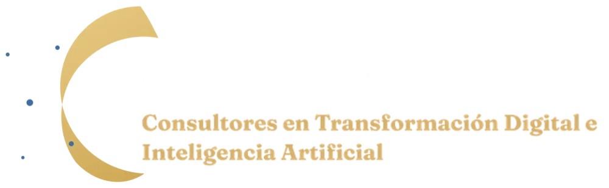

<!DOCTYPE html>
<html lang="es">
<head>
<meta charset="UTF-8">
<meta name="viewport" content="width=device-width, initial-scale=1">
<title>Revisión de Diagnósticos | Oberon</title>
<meta name="robots" content="noindex, nofollow">
<link rel="icon" href="/favicon.ico" sizes="any">
<link rel="preconnect" href="https://fonts.googleapis.com">
<link rel="preconnect" href="https://fonts.gstatic.com" crossorigin>
<link href="https://fonts.googleapis.com/css2?family=Fraunces:ital,opsz,wght@0,9..144,300..700;1,9..144,300..700&family=Manrope:wght@400;500;600;700&family=IBM+Plex+Mono:wght@400;500&display=swap" rel="stylesheet">
<style>
/* ===== Página interna: revisión del estudio y generación del PDF ===== */
:root{
  --navy:#0A0F2C; --navy-2:#1B2350; --ink:#1B2350; --ink-2:#4A5275; --ink-3:#7A819E;
  --gold:#D4AF6A; --gold-d:#A9803A; --gold-2:#F0D5A0; --ice:#BFE0F5;
  --paper:#FFFFFF; --soft:#F6F4EE; --line:#E4E2DA;
  --serif:'Fraunces',Georgia,serif; --sans:'Manrope',system-ui,sans-serif; --mono:'IBM Plex Mono',ui-monospace,monospace;
}
*{box-sizing:border-box;}
html,body{margin:0;}
body{font-family:var(--sans);background:#2A2F45;color:var(--ink);-webkit-font-smoothing:antialiased;}
button,input,select,textarea{font:inherit;}

/* ---------- panel lateral ---------- */
.app{display:grid;grid-template-columns:400px 1fr;min-height:100vh;}
.side{background:#0A0F2C;color:#F4F2EC;padding:22px 22px 40px;height:100vh;overflow:auto;position:sticky;top:0;border-right:1px solid rgba(191,224,245,.12);}
.side h1{font-family:var(--serif);font-weight:400;font-size:1.5rem;margin:0;}
.side .sub{font-family:var(--mono);font-size:.64rem;letter-spacing:.16em;text-transform:uppercase;color:var(--gold);margin-top:4px;}
.box{margin-top:18px;padding:16px;border:1px solid rgba(191,224,245,.14);border-radius:14px;background:rgba(255,255,255,.025);}
.box h2{font-family:var(--mono);font-weight:400;font-size:.66rem;letter-spacing:.16em;text-transform:uppercase;color:var(--gold-2);margin:0 0 12px;}
.lbl{display:block;font-family:var(--mono);font-size:.6rem;letter-spacing:.14em;text-transform:uppercase;color:rgba(244,242,236,.55);margin:12px 0 6px;}
.lbl:first-of-type{margin-top:0;}
.in{width:100%;padding:9px 11px;border-radius:10px;border:1px solid rgba(191,224,245,.2);background:rgba(7,10,30,.6);color:#F4F2EC;font-size:.88rem;}
.in:focus{outline:none;border-color:var(--gold);}
textarea.in{resize:vertical;min-height:90px;line-height:1.5;}
select.in option{background:#0A0F2C;}
.hint{font-size:.72rem;color:rgba(244,242,236,.5);margin-top:6px;line-height:1.45;}
.row2{display:grid;grid-template-columns:1fr 1fr;gap:8px;}
.btns{display:flex;flex-wrap:wrap;gap:8px;}
.b{border:1px solid rgba(191,224,245,.25);background:rgba(255,255,255,.04);color:#F4F2EC;padding:8px 13px;border-radius:999px;font-size:.8rem;cursor:pointer;}
.b:hover{border-color:var(--gold);color:var(--gold-2);}
.b.pri{background:var(--gold);border-color:var(--gold);color:#0A0F2C;font-weight:700;}
.b.pri:hover{background:var(--gold-2);color:#0A0F2C;}
.b.big{width:100%;padding:13px;font-size:.95rem;border-radius:14px;}
.msg{font-size:.78rem;margin-top:8px;color:#ffb4a6;min-height:1em;}
.msg.ok{color:#8FD9B6;}
.warn{display:none;margin-top:12px;padding:10px 12px;border-radius:10px;background:rgba(255,138,122,.14);border:1px solid rgba(255,138,122,.4);color:#ffc9bd;font-size:.8rem;}
.warn.on{display:block;}
.rec{border:1px solid rgba(191,224,245,.14);border-radius:12px;padding:10px;margin-top:10px;background:rgba(7,10,30,.35);}
.rec .top{display:flex;gap:6px;}
.rec .top .in{flex:1;}
.rec textarea.in{min-height:60px;margin-top:6px;}
.rec select.in{margin-top:6px;}
.x{flex:none;width:36px;border-radius:10px;border:1px solid rgba(191,224,245,.2);background:transparent;color:rgba(244,242,236,.55);cursor:pointer;}
.x:hover{color:#ffb4a6;border-color:#ffb4a6;}
.lista{display:grid;gap:6px;margin-top:12px;max-height:260px;overflow:auto;}
.lista .it{text-align:left;border:1px solid rgba(191,224,245,.16);background:rgba(7,10,30,.4);color:#F4F2EC;border-radius:10px;padding:8px 10px;font-size:.8rem;cursor:pointer;}
.lista .it:hover,.lista .it.on{border-color:var(--gold);}
.lista .it span{display:block;font-size:.7rem;color:rgba(244,242,236,.55);margin-top:2px;}
.lista .it.late{border-color:rgba(255,138,122,.6);background:rgba(255,138,122,.1);}
.meta{font-size:.8rem;color:rgba(244,242,236,.75);line-height:1.6;}
.meta b{color:#fff;font-weight:600;}

/* ---------- vista previa ---------- */
.preview{padding:32px 24px 60px;overflow:auto;}
.pages{display:flex;flex-direction:column;align-items:center;gap:26px;}
.empty{color:#C9CCE0;text-align:center;margin-top:20vh;font-size:1rem;}

/* ---------- páginas del reporte (tamaño Carta) ---------- */
.page{width:8.5in;height:11in;background:var(--paper);position:relative;overflow:hidden;box-shadow:0 20px 50px -20px rgba(0,0,0,.6);
  -webkit-print-color-adjust:exact;print-color-adjust:exact;display:flex;flex-direction:column;}
.pg-in{flex:1;padding:.55in .6in .3in;display:flex;flex-direction:column;min-height:0;}
.pg-head{display:flex;justify-content:space-between;align-items:center;padding-bottom:12px;border-bottom:1px solid var(--line);margin-bottom:22px;}
.pg-brand{display:flex;align-items:center;gap:8px;font-family:var(--serif);font-weight:600;letter-spacing:.14em;font-size:.82rem;color:var(--ink);}
.pg-brand svg{width:24px;height:24px;}
.pg-ref{font-family:var(--mono);font-size:.56rem;letter-spacing:.12em;text-transform:uppercase;color:var(--ink-3);}
.pg-foot{display:flex;justify-content:space-between;padding:10px .6in 14px;font-family:var(--mono);font-size:.52rem;letter-spacing:.1em;text-transform:uppercase;color:var(--ink-3);border-top:1px solid var(--line);margin:0 0;}
.kick{font-family:var(--mono);font-size:.62rem;letter-spacing:.18em;text-transform:uppercase;color:var(--gold-d);}
.h2{font-family:var(--serif);font-weight:400;font-size:1.9rem;line-height:1.1;margin:6px 0 0;color:var(--ink);letter-spacing:-.01em;}
.lead{color:var(--ink-2);font-size:.86rem;margin:8px 0 0;line-height:1.5;}
.sec{margin-top:18px;}
.h3{font-family:var(--serif);font-weight:400;font-size:1.08rem;margin:0 0 6px;color:var(--ink);}
.cap{font-size:.7rem;color:var(--ink-3);margin:0 0 6px;}
p.txt{font-size:.82rem;line-height:1.6;color:var(--ink-2);margin:0 0 8px;}
.card{border:1px solid var(--line);border-radius:12px;padding:14px 16px;background:#fff;}
.card.soft{background:var(--soft);border-color:transparent;}

/* portada */
.cover{background:radial-gradient(120% 70% at 50% 0%,#18225C 0%,#0A0F2C 55%,#070A1E 100%);color:#F4F2EC;}
.cover .pg-in{padding:.7in .75in .6in;justify-content:space-between;}
.cover-logo{height:88px;width:auto;}
.cover-stars{position:absolute;inset:0;pointer-events:none;}
.cover .kick{color:var(--gold);}
.cover h1{font-family:var(--serif);font-weight:400;font-size:3.1rem;line-height:1.02;margin:14px 0 0;letter-spacing:-.02em;}
.cover h1 em{font-style:italic;color:var(--gold-2);}
.cover .client{font-family:var(--serif);font-size:1.6rem;margin-top:34px;color:#fff;}
.cover .client small{display:block;font-family:var(--mono);font-size:.6rem;letter-spacing:.16em;text-transform:uppercase;color:rgba(244,242,236,.55);margin-bottom:6px;}
.cover-meta{display:grid;grid-template-columns:repeat(3,1fr);gap:14px 20px;border-top:1px solid rgba(212,175,106,.4);padding-top:18px;}
.cover-meta small{display:block;font-family:var(--mono);font-size:.56rem;letter-spacing:.14em;text-transform:uppercase;color:rgba(244,242,236,.5);}
.cover-meta b{display:block;font-weight:600;font-size:.86rem;margin-top:4px;}
.cover-conf{font-size:.68rem;color:rgba(244,242,236,.55);margin-top:18px;line-height:1.5;max-width:5.6in;}
.gold-line{height:3px;background:linear-gradient(90deg,#c79a52,#f0d5a0,#c79a52);position:absolute;left:0;right:0;top:0;}

/* resumen */
.status{display:grid;grid-template-columns:2.6in 1fr;gap:22px;align-items:center;}
.status svg text.ax{fill:var(--ink-3);}
.badge{display:inline-flex;align-items:center;gap:7px;font-family:var(--mono);font-size:.6rem;letter-spacing:.14em;text-transform:uppercase;padding:5px 11px;border-radius:999px;border:1px solid currentColor;}
.badge i{width:7px;height:7px;border-radius:50%;background:currentColor;}
.c-libre{color:#3E7FB8;} .c-sano{color:#2E9E6E;} .c-limite{color:#B7861E;} .c-sobre{color:#D04A40;}
.bigmsg{font-family:var(--serif);font-size:1.3rem;line-height:1.28;margin:10px 0 0;color:var(--ink);}
.kpis{display:grid;grid-template-columns:repeat(4,1fr);gap:10px;margin-top:18px;}
.kpi{border:1px solid var(--line);border-radius:12px;padding:11px 13px;}
.kpi small{display:block;font-family:var(--mono);font-size:.52rem;letter-spacing:.12em;text-transform:uppercase;color:var(--ink-3);}
.kpi b{display:block;font-family:var(--serif);font-weight:400;font-size:1.55rem;margin-top:4px;color:var(--ink);}
.kpi span{display:block;font-size:.66rem;color:var(--ink-3);margin-top:2px;}
.interp{border-left:3px solid var(--gold);background:var(--soft);border-radius:0 12px 12px 0;padding:14px 18px;}
.interp p{font-size:.84rem;line-height:1.6;color:var(--ink);margin:0 0 8px;}
.interp p:last-child{margin:0;}
.interp .sig{font-family:var(--mono);font-size:.58rem;letter-spacing:.12em;text-transform:uppercase;color:var(--gold-d);margin-top:10px;}
ul.find{list-style:none;margin:0;padding:0;display:grid;gap:7px;}
ul.find li{position:relative;padding-left:18px;font-size:.8rem;line-height:1.5;color:var(--ink-2);}
ul.find li::before{content:'';position:absolute;left:2px;top:.55em;width:7px;height:7px;border-radius:2px;background:var(--gold);}

/* capacidad */
.two{display:grid;grid-template-columns:1fr 1fr;gap:18px;}
.crow{display:flex;justify-content:space-between;font-size:.76rem;padding:5px 0;border-bottom:1px dashed var(--line);color:var(--ink-2);}
.crow b{color:var(--ink);font-weight:600;font-variant-numeric:tabular-nums;}
.crow.eq span,.crow.eq b{color:var(--gold-d);}
.crow.tot{border:0;padding-top:9px;}
.crow.tot b{font-family:var(--serif);font-weight:400;font-size:1.25rem;color:var(--gold-d);}

/* gráficas reutilizadas del motor, en tema claro */
.page svg{display:block;width:100%;height:auto;overflow:visible;}
.page .pg-brand svg{width:24px;height:24px;flex:none;}
.page .ax{fill:#6B7290;font-family:'IBM Plex Mono',monospace;font-size:10px;}
.page .grid{stroke:#ECEAE3;}
.page .val{fill:var(--ink);font-family:'Manrope',sans-serif;font-size:10.5px;font-weight:700;}
.dx-legend{display:flex;flex-wrap:wrap;gap:4px 12px;margin-top:6px;font-size:.64rem;color:var(--ink-2);}
.dx-legend span{display:inline-flex;align-items:center;gap:5px;}
.dx-legend i{width:9px;height:9px;border-radius:2px;}
.dx-legend i.line{height:0;border-top:2px dashed #FF8A7A;border-radius:0;width:14px;}
.dx-hbars{display:grid;gap:9px;margin-top:8px;}
.dx-hbar{display:grid;grid-template-columns:1.4in 1fr .8in;gap:10px;align-items:center;font-size:.76rem;color:var(--ink-2);}
.dx-hbar div{height:20px;border-radius:5px;background:#F1EFE8;overflow:hidden;}
.dx-hbar i{display:block;height:100%;border-radius:5px;}
.dx-hbar b{font-variant-numeric:tabular-nums;color:var(--ink);}
.dx-heat{display:grid;gap:4px;margin-top:8px;font-size:.7rem;}
.dx-heat .hd{font-family:var(--mono);font-size:.56rem;letter-spacing:.06em;color:var(--ink-3);text-align:center;align-self:center;text-transform:capitalize;}
.dx-heat .cell{border-radius:6px;padding:8px 2px;text-align:center;color:var(--ink);font-weight:700;font-variant-numeric:tabular-nums;}
.insight{font-size:.74rem;line-height:1.5;color:var(--ink-2);margin:8px 0 0;padding:9px 12px;background:var(--soft);border-radius:8px;}

/* procesos */
table.pt{width:100%;border-collapse:collapse;font-size:.7rem;}
table.pt th{text-align:left;font-family:var(--mono);font-weight:400;font-size:.52rem;letter-spacing:.1em;text-transform:uppercase;color:var(--ink-3);padding:6px 6px;border-bottom:1.5px solid var(--ink);}
table.pt td{padding:5px 6px;border-bottom:1px solid var(--line);color:var(--ink-2);vertical-align:top;}
table.pt .n{text-align:right;font-variant-numeric:tabular-nums;}
table.pt td.n{color:var(--ink);font-weight:600;}
table.pt tfoot td{border-top:1.5px solid var(--ink);border-bottom:0;font-weight:700;color:var(--ink);}
.dot{display:inline-block;width:8px;height:8px;border-radius:2px;margin-right:6px;}
.qtag{display:inline-block;font-size:.58rem;padding:2px 7px;border-radius:999px;white-space:nowrap;}
.qWin{background:rgba(46,158,110,.14);color:#1F7A53;} .qQuick{background:rgba(62,127,184,.13);color:#2E6596;}
.qLean{background:rgba(183,134,30,.14);color:#8A6414;} .qLow{background:#F1EFE8;color:#6B7290;}
.page svg .q{fill:#6B7290;font-family:'IBM Plex Mono',monospace;font-size:9.5px;letter-spacing:.04em;}
.page svg .mid{stroke:#D9D6CC;stroke-dasharray:4 4;}
.page svg .axl{stroke:#C9C6BC;}
.page svg .pt{fill:var(--ink);font-family:'Manrope',sans-serif;font-size:11px;font-weight:700;}

/* recomendaciones */
.hz{margin-top:14px;}
.hz-t{display:flex;align-items:center;gap:10px;font-family:var(--mono);font-size:.6rem;letter-spacing:.16em;text-transform:uppercase;color:var(--gold-d);margin-bottom:8px;}
.hz-t::after{content:'';flex:1;height:1px;background:var(--line);}
.ritem{display:grid;grid-template-columns:28px 1fr;gap:10px;padding:9px 0;border-bottom:1px solid var(--line);}
.ritem:last-child{border:0;}
.ritem .nb{width:26px;height:26px;border-radius:50%;background:var(--navy-2);color:var(--gold-2);display:grid;place-items:center;font-family:var(--mono);font-size:.66rem;}
.ritem b{display:block;font-size:.84rem;color:var(--ink);}
.ritem span{display:block;font-size:.76rem;line-height:1.5;color:var(--ink-2);margin-top:2px;}
.cta{margin-top:auto;border-radius:14px;padding:18px 20px;background:linear-gradient(120deg,#0A0F2C,#1B2350);color:#F4F2EC;display:grid;grid-template-columns:1fr auto;gap:16px;align-items:center;}
.cta b{font-family:var(--serif);font-weight:400;font-size:1.2rem;display:block;}
.cta span{font-size:.76rem;color:rgba(244,242,236,.75);display:block;margin-top:4px;}
.cta a{display:inline-block;background:var(--gold);color:#0A0F2C;font-weight:700;font-size:.78rem;text-decoration:none;padding:10px 16px;border-radius:999px;white-space:nowrap;}
.cta .ct{font-size:.68rem;color:rgba(244,242,236,.6);margin-top:8px;}
.assume{font-size:.66rem;line-height:1.5;color:var(--ink-3);margin-top:12px;}

@page{size:letter;margin:0;}
@media print{
  body{background:#fff;}
  .app{display:block;}
  .side{display:none;}
  .preview{padding:0;overflow:visible;}
  .pages{gap:0;}
  .page{box-shadow:none;break-after:page;page-break-after:always;}
  .page:last-child{break-after:auto;page-break-after:auto;}
}
@media (max-width:1100px){.app{grid-template-columns:1fr;}.side{position:static;height:auto;}}
</style>
</head>
<body>
<div class="app">
  <aside class="side" id="side"></aside>
  <main class="preview"><div class="pages" id="pages"></div></main>
</div>

<script src="assets/diagnostico-config.js"></script>
<script src="assets/diagnostico-textos.js"></script>
<script src="assets/diagnostico-motor.js"></script>
<script>
(() => {
'use strict';
const AGENDA = 'https://outlook.office.com/book/OberonConsultoresenTransformacinDigital1@oberontd.com/?ismsaljsauthenabled';

/* ---------------- Textos del reporte ---------------- */
const R = {
es: {
  title:'Revisión de diagnósticos', sub:'Uso interno · Oberon',
  conn:'Solicitudes (Google Sheet)', connMissing:'Modo prototipo: falta pegar la URL de Apps Script en assets/diagnostico-config.js.', clave:'Clave secreta', claveH:'La que salió al ejecutar configurar(). Se guarda solo en este navegador.',
  pend:'Ver solicitudes', folioL:'Abrir por folio', open:'Abrir', badClave:'Clave incorrecta.', netErr:'No se pudo conectar con el Sheet.', notFound:'No encontré ese folio.',
  estadoL:'Estado en el Sheet', markSent:'Marcar como enviado', vence:'vence', none:'No hay solicitudes todavía.', working:'Consultando…',
  load:'Cargar estudio', loadLast:'Último envío de este navegador', loadEx:'Ejemplo', loadPaste:'Pegar el JSON de la solicitud', loadBtn:'Cargar', loadFile:'Abrir .json',
  noLast:'No hay envíos guardados en este navegador.', badJson:'El texto no es un estudio válido.', loaded:'Estudio cargado.',
  repLang:'Idioma del reporte', consultant:'Consultor', role:'Cargo', date:'Fecha de entrega',
  interp:'Interpretación del consultor', interpH:'Lectura de los resultados en el contexto del cliente. Separa párrafos con una línea en blanco.',
  recs:'Recomendaciones', recAdd:'Agregar', recDraft:'Generar borrador', recTitle:'Título', recDetail:'Detalle', hz:'Horizonte', hz1:'Inmediato', hz2:'30 a 60 días', hz3:'90 días o más', del:'Eliminar',
  next:'Próximos pasos', nextDef:'Sesión de revisión de resultados (60 min) para validar supuestos y priorizar la ruta.\n\nPropuesta de diagnóstico detallado de los procesos de Prioridad 1.',
  print:'Generar PDF', printH:'En la ventana de impresión elige «Guardar como PDF», tamaño Carta, márgenes Ninguno y activa «Gráficos de fondo».',
  overflow:'Ojo: la página {n} no cabe completa. Acorta el texto.', saved:'El borrador se guarda solo en este navegador.',
  study:'Estudio', contact:'Contacto', choose:'Carga un estudio para ver la vista previa del reporte.',
  coverKicker:'Reporte de diagnóstico', coverTitle:'Diagnóstico de <em>Capacidad Operativa</em>',
  prepFor:'Preparado para', prepBy:'Preparado por', folio:'Folio', dateL:'Fecha', scope:'Alcance', scopeDept:'Departamento', scopeProc:'Proceso', countryL:'País',
  conf:'Documento confidencial. Los procesos se identifican con códigos (P-01, P-02…); el cliente conserva el decodificador con los nombres reales.',
  p2:'Resumen ejecutivo', p2s:'Situación actual de la carga de trabajo frente a la capacidad instalada.', kInterp:'Interpretación del consultor', findings:'Hallazgos clave',
  fAuto:'El {a} de la carga es automatizable: ≈ {h} h al año, equivalentes a {f} FTE.', fTop:'{c} concentra el {p} de la carga total ({h} h al año).',
  p3:'Capacidad instalada y carga anual', p3s:'Cuántas horas tiene realmente el equipo y cómo se consumen a lo largo del año.',
  capHow:'Cómo se calcula', capHowT:'Partimos de la jornada y descontamos comida, descansos, feriados y vacaciones. El resultado son las horas que una persona puede dedicar al trabajo en un año (1 FTE). La carga de cada proceso es tiempo × volumen × ejecuciones al año, más el retrabajo.',
  p4:'Ritmo de trabajo', p4s:'Cómo se reparte la carga entre las semanas y los días de un mes típico.',
  p5:'Procesos y oportunidades', p5s:'Peso de cada proceso en la carga y su potencial de automatización.',
  thFreq:'Frecuencia', thHours:'h / año', thShare:'% carga', thAuto:'Automatizable', thQuad:'Cuadrante', mxT:'Matriz de prioridad',
  mxNote:'Arriba a la derecha quedan los procesos con mucha carga y alto potencial de automatización: son los primeros candidatos.',
  p6:'Recomendaciones y ruta de mejora', p6s:'Acciones sugeridas por horizonte de implementación.', nextT:'Próximos pasos', recEmpty:'Sin recomendaciones capturadas.',
  ctaT:'Agenda tu sesión de revisión', ctaD:'Revisemos juntos estos resultados y la ruta de implementación.', ctaB:'Agendar sesión',
  assume:'Supuestos: los resultados dependen de los datos capturados por el cliente. Los procesos diarios consideran {d} días laborales al año; la capacidad descuenta {h} feriados y {v} días de vacaciones. El potencial de automatización es una estimación preliminar que se valida en el diagnóstico detallado.',
  pageOf:'Página {n} de {t}',
  rGapT:'Cerrar la brecha de capacidad', rGapD:'La carga supera la capacidad en ≈ {h} h al año ({f} FTE). Antes de contratar, priorizar la automatización de los procesos de Prioridad 1, que podría liberar ≈ {l} h al año.',
  rFreeT:'Aprovechar la capacidad disponible', rFreeD:'El equipo puede absorber ≈ {h} h al año de nuevo alcance ({f} FTE) sin afectar el servicio.',
  rAutoT:'Automatizar {c}', rAutoD:'Potencial estimado de {a} (≈ {h} h al año). Usa {tools}: buen candidato para flujos con Power Automate, RPA o integraciones.',
  rStdT:'Estandarizar y documentar {c}', rStdD:'Mapear el proceso de punta a punta y definir reglas de decisión para reducir variación y retrabajo antes de automatizar.',
  rBalT:'Balancear la carga entre días', rBalD:'Mover actividades de los días con mayor uso hacia los de menor uso y escalonar los cierres para reducir los picos.',
  rRwT:'Reducir el retrabajo en {c}', rRwD:'Las correcciones agregan un {r} al tiempo del proceso. Atacar la causa raíz con controles en el origen.',
},
en: {
  title:'Assessment review', sub:'Internal use · Oberon',
  load:'Load study', loadLast:'Last submission in this browser', loadEx:'Example', loadPaste:'Paste the request JSON', loadBtn:'Load', loadFile:'Open .json',
  noLast:'No submissions saved in this browser.', badJson:'The text is not a valid study.', loaded:'Study loaded.',
  repLang:'Report language', consultant:'Consultant', role:'Title', date:'Delivery date',
  interp:'Consultant interpretation', interpH:'A reading of the results in the client’s context. Separate paragraphs with a blank line.',
  recs:'Recommendations', recAdd:'Add', recDraft:'Generate draft', recTitle:'Title', recDetail:'Detail', hz:'Horizon', hz1:'Immediate', hz2:'30 to 60 days', hz3:'90 days or more', del:'Delete',
  next:'Next steps', nextDef:'Results review session (60 min) to validate assumptions and prioritize the roadmap.\n\nProposal for a detailed assessment of the Priority 1 processes.',
  print:'Generate PDF', printH:'In the print dialog choose “Save as PDF”, Letter size, no margins and enable “Background graphics”.',
  overflow:'Heads up: page {n} does not fit. Shorten the text.', saved:'The draft is saved only in this browser.',
  study:'Study', contact:'Contact', choose:'Load a study to preview the report.',
  coverKicker:'Assessment report', coverTitle:'Operational <em>Capacity Assessment</em>',
  prepFor:'Prepared for', prepBy:'Prepared by', folio:'Reference', dateL:'Date', scope:'Scope', scopeDept:'Department', scopeProc:'Process', countryL:'Country',
  conf:'Confidential document. Processes are identified by codes (P-01, P-02…); the client keeps the decoder with the real names.',
  p2:'Executive summary', p2s:'Current workload compared with installed capacity.', kInterp:'Consultant interpretation', findings:'Key findings',
  fAuto:'{a} of the workload can be automated: about {h} h per year, equal to {f} FTE.', fTop:'{c} accounts for {p} of the total workload ({h} h per year).',
  p3:'Installed capacity and annual workload', p3s:'How many hours the team really has and how they are used throughout the year.',
  capHow:'How it is calculated', capHowT:'We start from the workday and deduct lunch, breaks, holidays and vacation. The result is the hours one person can devote to work in a year (1 FTE). Each process’s workload is time × volume × runs per year, plus rework.',
  p4:'Work rhythm', p4s:'How the workload is spread across the weeks and days of a typical month.',
  p5:'Processes and opportunities', p5s:'Each process’s share of the workload and its automation potential.',
  thFreq:'Frequency', thHours:'h / year', thShare:'% load', thAuto:'Automatable', thQuad:'Quadrant', mxT:'Priority matrix',
  mxNote:'Top right are the processes with a heavy workload and high automation potential: they are the first candidates.',
  p6:'Recommendations and improvement roadmap', p6s:'Suggested actions by implementation horizon.', nextT:'Next steps', recEmpty:'No recommendations entered.',
  ctaT:'Book your review session', ctaD:'Let’s review these results and the implementation roadmap together.', ctaB:'Book a session',
  assume:'Assumptions: results depend on the data entered by the client. Daily processes assume {d} working days per year; capacity deducts {h} holidays and {v} vacation days. The automation potential is a preliminary estimate validated during the detailed assessment.',
  pageOf:'Page {n} of {t}',
  rGapT:'Close the capacity gap', rGapD:'The workload exceeds capacity by about {h} h per year ({f} FTE). Before hiring, prioritize automating the Priority 1 processes, which could free about {l} h per year.',
  rFreeT:'Use the available capacity', rFreeD:'The team can absorb about {h} h per year of new scope ({f} FTE) without affecting service.',
  rAutoT:'Automate {c}', rAutoD:'Estimated potential of {a} (about {h} h per year). It uses {tools}: a good candidate for Power Automate, RPA or integration flows.',
  rStdT:'Standardize and document {c}', rStdD:'Map the process end to end and define decision rules to reduce variation and rework before automating.',
  rBalT:'Balance the workload across days', rBalD:'Move activities from the busiest days to the lightest ones and stagger closings to reduce peaks.',
  rRwT:'Reduce rework in {c}', rRwD:'Corrections add {r} to the process time. Address the root cause with controls at the source.',
},
pt: {
  title:'Revisão de diagnósticos', sub:'Uso interno · Oberon',
  load:'Carregar estudo', loadLast:'Último envio deste navegador', loadEx:'Exemplo', loadPaste:'Colar o JSON da solicitação', loadBtn:'Carregar', loadFile:'Abrir .json',
  noLast:'Não há envios salvos neste navegador.', badJson:'O texto não é um estudo válido.', loaded:'Estudo carregado.',
  repLang:'Idioma do relatório', consultant:'Consultor', role:'Cargo', date:'Data de entrega',
  interp:'Interpretação do consultor', interpH:'Leitura dos resultados no contexto do cliente. Separe parágrafos com uma linha em branco.',
  recs:'Recomendações', recAdd:'Adicionar', recDraft:'Gerar rascunho', recTitle:'Título', recDetail:'Detalhe', hz:'Horizonte', hz1:'Imediato', hz2:'30 a 60 dias', hz3:'90 dias ou mais', del:'Excluir',
  next:'Próximos passos', nextDef:'Sessão de revisão dos resultados (60 min) para validar premissas e priorizar o roteiro.\n\nProposta de diagnóstico detalhado dos processos de Prioridade 1.',
  print:'Gerar PDF', printH:'Na janela de impressão escolha «Salvar como PDF», tamanho Carta, margens Nenhuma e ative «Gráficos de fundo».',
  overflow:'Atenção: a página {n} não cabe inteira. Encurte o texto.', saved:'O rascunho fica salvo apenas neste navegador.',
  study:'Estudo', contact:'Contato', choose:'Carregue um estudo para ver a prévia do relatório.',
  coverKicker:'Relatório de diagnóstico', coverTitle:'Diagnóstico de <em>Capacidade Operacional</em>',
  prepFor:'Preparado para', prepBy:'Preparado por', folio:'Protocolo', dateL:'Data', scope:'Escopo', scopeDept:'Departamento', scopeProc:'Processo', countryL:'País',
  conf:'Documento confidencial. Os processos são identificados por códigos (P-01, P-02…); o cliente guarda o decodificador com os nomes reais.',
  p2:'Resumo executivo', p2s:'Situação atual da carga de trabalho frente à capacidade instalada.', kInterp:'Interpretação do consultor', findings:'Principais achados',
  fAuto:'{a} da carga é automatizável: ≈ {h} h por ano, equivalentes a {f} FTE.', fTop:'{c} concentra {p} da carga total ({h} h por ano).',
  p3:'Capacidade instalada e carga anual', p3s:'Quantas horas a equipe realmente tem e como são consumidas ao longo do ano.',
  capHow:'Como é calculado', capHowT:'Partimos da jornada e descontamos almoço, pausas, feriados e férias. O resultado são as horas que uma pessoa pode dedicar ao trabalho em um ano (1 FTE). A carga de cada processo é tempo × volume × execuções por ano, mais o retrabalho.',
  p4:'Ritmo de trabalho', p4s:'Como a carga se distribui entre as semanas e os dias de um mês típico.',
  p5:'Processos e oportunidades', p5s:'Peso de cada processo na carga e seu potencial de automação.',
  thFreq:'Frequência', thHours:'h / ano', thShare:'% carga', thAuto:'Automatizável', thQuad:'Quadrante', mxT:'Matriz de prioridade',
  mxNote:'No canto superior direito ficam os processos com muita carga e alto potencial de automação: são os primeiros candidatos.',
  p6:'Recomendações e roteiro de melhoria', p6s:'Ações sugeridas por horizonte de implementação.', nextT:'Próximos passos', recEmpty:'Sem recomendações registradas.',
  ctaT:'Agende sua sessão de revisão', ctaD:'Vamos revisar juntos estes resultados e o roteiro de implementação.', ctaB:'Agendar sessão',
  assume:'Premissas: os resultados dependem dos dados informados pelo cliente. Processos diários consideram {d} dias úteis por ano; a capacidade desconta {h} feriados e {v} dias de férias. O potencial de automação é uma estimativa preliminar validada no diagnóstico detalhado.',
  pageOf:'Página {n} de {t}',
  rGapT:'Fechar a lacuna de capacidade', rGapD:'A carga supera a capacidade em ≈ {h} h por ano ({f} FTE). Antes de contratar, priorizar a automação dos processos de Prioridade 1, que poderia liberar ≈ {l} h por ano.',
  rFreeT:'Aproveitar a capacidade disponível', rFreeD:'A equipe pode absorver ≈ {h} h por ano de novo escopo ({f} FTE) sem afetar o serviço.',
  rAutoT:'Automatizar {c}', rAutoD:'Potencial estimado de {a} (≈ {h} h por ano). Usa {tools}: bom candidato para fluxos com Power Automate, RPA ou integrações.',
  rStdT:'Padronizar e documentar {c}', rStdD:'Mapear o processo de ponta a ponta e definir regras de decisão para reduzir variação e retrabalho antes de automatizar.',
  rBalT:'Balancear a carga entre os dias', rBalD:'Mover atividades dos dias mais carregados para os mais leves e escalonar os fechamentos para reduzir os picos.',
  rRwT:'Reduzir o retrabalho em {c}', rRwD:'As correções adicionam {r} ao tempo do processo. Atacar a causa raiz com controles na origem.',
}};

/* ---------------- Conexión con el Sheet ---------------- */
const ENDPOINT = (window.DX_CONFIG && window.DX_CONFIG.endpoint) || '';
let CLAVE = ''; try { CLAVE = localStorage.getItem('oberon-dx-clave') || ''; } catch (e) {}
let LISTA = null, ESTADO = null, CMSG = '';
const api = (params) => fetch(ENDPOINT + '?' + new URLSearchParams(Object.assign({}, params, { clave:CLAVE }))).then((r) => r.json());
const apiPost = (body) => fetch(ENDPOINT, { method:'POST', body:JSON.stringify(Object.assign({}, body, { clave:CLAVE })) }).then((r) => r.json());
const apiErr = (j) => (j && j.error === 'clave' ? R.es.badClave : j && j.error === 'folio' ? R.es.notFound : R.es.netErr);
function cmsg(txt, ok) { CMSG = txt; const m = document.getElementById('cmsg'); if (m) { m.textContent = txt; m.className = 'msg' + (ok ? ' ok' : ''); } }
function openFolio(folio) {
  cmsg(R.es.working, true);
  return api({ accion:'estudio', folio }).then((j) => {
    if (!j.ok) throw j;
    ESTADO = j.estado; loadPayload(j.estudio); cmsg('');
    if (ESTADO === 'Nuevo') apiPost({ accion:'estado', folio, estado:'En revisión' }).then((k) => { if (k.ok) { ESTADO = 'En revisión'; renderSide(); } });
  }).catch((j) => cmsg(apiErr(j)));
}

/* ---------------- Estado ---------------- */
let P = null;            // solicitud cargada (lo que llega del Sheet)
let RS = null;           // borrador del consultor para ese folio
const LANGS = ['es','en','pt'];
const lang = () => (RS && RS.lang) || 'es';
const t = (k) => R[lang()][k] ?? window.DX_TEXT[lang()][k] ?? R.es[k] ?? window.DX_TEXT.es[k] ?? k;
let CW = 700;
const E = createDxEngine({ state:() => Object.assign({}, P ? P.entrada : {}, { lang:lang() }), t, chartW:() => CW });
const { fill, esc, num, nf, pct, fte, dayName, calc, status, stackChart, annualChart, heatmap, balanceMsg, gauge, matrix, quadrant } = E;
const tl = (k) => R.es[k] ?? k; // el panel interno siempre en español

const draftKey = (f) => 'oberon-dx-rev-' + f;
const saveDraft = () => { try { if (P) localStorage.setItem(draftKey(P.folio), JSON.stringify(RS)); } catch (e) {} };
const today = () => new Date().toISOString().slice(0, 10);

function samplePayload() {
  const procs = [
    { time:45, unit:'min', qty:1, freq:'d', days:[0], weeks:[1,2,3,4], week:4, steps:18, tools:['excel','portal','erp'], doc:'partial', rules:'rFixed', input:'iStruct', rework:10 },
    { time:6, unit:'min', qty:65, freq:'d', days:[0], weeks:[1,2,3,4], week:4, steps:12, tools:['outlook','pdf','erp'], doc:'yes', rules:'rFixed', input:'iUnstr', rework:5 },
    { time:24, unit:'h', qty:1, freq:'m', days:[0,1,2], weeks:[1,2,3,4], week:4, steps:40, tools:['excel','erp'], doc:'partial', rules:'rMixed', input:'iStruct', rework:'' },
    { time:2, unit:'h', qty:1, freq:'w', days:[0,2,4], weeks:[1,2,3], week:4, steps:10, tools:['excel','outlook','bi'], doc:'yes', rules:'rFixed', input:'iStruct', rework:'' },
    { time:20, unit:'min', qty:12, freq:'d', days:[0], weeks:[1,2,3,4], week:4, steps:8, tools:['outlook','phone','whatsapp'], doc:'no', rules:'rJudg', input:'iUnstr', rework:15 },
    { time:24, unit:'h', qty:1, freq:'t', days:[0], weeks:[1,2,3,4], week:4, steps:30, tools:['excel','word','paper'], doc:'no', rules:'rMixed', input:'iPaper', rework:'' },
  ];
  return { folio:'OB-2026-0042', fecha:new Date().toISOString(), idioma:'es', version:1,
    contacto:{ nombre:'Mariana López', empresa:'Distribuidora Ejemplo S.A. de C.V.', puesto:'Gerente de Finanzas', correo:'mariana@ejemplo.com', telefono:'', quiereContacto:true },
    entrada:{ mode:'dept', country:'MX', hoursDay:9, lunch:60, breaks:30, daysWeek:5, holidays:7, vacation:12, people:2, dedication:100, procs } };
}

function loadPayload(p) {
  if (!p || !p.entrada || !Array.isArray(p.entrada.procs) || !p.folio) throw new Error('bad');
  P = p;
  let d = null;
  try { d = JSON.parse(localStorage.getItem(draftKey(p.folio)) || 'null'); } catch (e) {}
  RS = d || { lang:LANGS.includes(p.idioma) ? p.idioma : 'es', consultant:'León Urías', role:'Oberon · Transformación Digital e IA', date:today(), interp:'', recs:[], next:R[LANGS.includes(p.idioma) ? p.idioma : 'es'].nextDef };
  renderSide(); renderReport();
}

/* ---------------- Borrador automático de recomendaciones ---------------- */
function draftRecs(r) {
  const out = [];
  const gap = r.total - r.capTeam, fteH = (h) => fte(r.capPerson ? h / r.capPerson : 0);
  const wins = r.procs.filter((x) => quadrant(x, r) === 'qWin').sort((a, b) => b.lib - a.lib);
  if (gap > 0) out.push({ title:t('rGapT'), detail:fill(t('rGapD'), { h:nf(gap), f:fteH(gap), l:nf(wins.reduce((a, x) => a + x.lib, 0) || r.lib) }), hz:'1' });
  else if (r.util < .7) out.push({ title:t('rFreeT'), detail:fill(t('rFreeD'), { h:nf(-gap), f:fteH(-gap) }), hz:'2' });
  const tools = (x) => x.p.tools.map((k) => window.DX_TEXT[lang()].tools[k]).join(', ');
  (wins.length ? wins : r.procs.slice().sort((a, b) => b.lib - a.lib)).slice(0, 2)
    .forEach((x) => out.push({ title:fill(t('rAutoT'), { c:x.code }), detail:fill(t('rAutoD'), { a:pct(x.auto), h:nf(x.lib), tools:tools(x) || '—' }), hz:'2' }));
  r.procs.filter((x) => x.p.doc === 'no' || x.p.rules === 'rJudg').slice(0, 1)
    .forEach((x) => out.push({ title:fill(t('rStdT'), { c:x.code }), detail:t('rStdD'), hz:'1' }));
  const rw = r.procs.filter((x) => num(x.p.rework) >= 10).sort((a, b) => num(b.p.rework) - num(a.p.rework))[0];
  if (rw) out.push({ title:fill(t('rRwT'), { c:rw.code }), detail:fill(t('rRwD'), { r:nf(num(rw.p.rework)) + '%' }), hz:'2' });
  const cells = []; r.cells.forEach((w) => w.forEach((d) => cells.push(r.capDay ? d.reduce((a, b) => a + b, 0) / r.capDay : 0)));
  if (Math.max(...cells) - Math.min(...cells) > .35) out.push({ title:t('rBalT'), detail:t('rBalD'), hz:'1' });
  return out;
}

/* ---------------- Panel lateral ---------------- */
const $side = document.getElementById('side'), $pages = document.getElementById('pages');
function renderSide() {
  const c = P ? P.contacto || {} : {};
  $side.innerHTML = `
    <h1>${esc(tl('title'))}</h1><div class="sub">${esc(tl('sub'))}</div>
    <div class="box"><h2>${esc(tl('conn'))}</h2>
      ${!ENDPOINT ? `<div class="hint" style="margin:0">${esc(tl('connMissing'))}</div>` : `
      <label class="lbl">${esc(tl('clave'))}</label><input class="in" type="password" id="clave" value="${esc(CLAVE)}" autocomplete="off">
      <div class="hint">${esc(tl('claveH'))}</div>
      <div class="btns" style="margin-top:10px"><button class="b" data-a="list">${esc(tl('pend'))}</button></div>
      <label class="lbl">${esc(tl('folioL'))}</label>
      <div class="row2" style="grid-template-columns:1fr auto"><input class="in" id="folioIn" placeholder="OB-2026-0001"><button class="b" data-a="open">${esc(tl('open'))}</button></div>
      <div class="msg" id="cmsg">${esc(CMSG)}</div>
      ${LISTA ? (LISTA.length ? `<div class="lista">${LISTA.map((x) => { const late = x.estado !== 'Enviado' && x.estado !== 'Descartado' && new Date(x.vence) < new Date(); return `<button class="it${late ? ' late' : ''}${P && P.folio === x.folio ? ' on' : ''}" data-folio="${esc(x.folio)}"><b>${esc(x.folio)}</b> · ${esc(x.empresa)}<span>${esc(x.estado)} · ${esc(tl('vence'))} ${esc(new Date(x.vence).toLocaleString('es-MX', { day:'2-digit', month:'short', hour:'2-digit', minute:'2-digit' }))}</span></button>`; }).join('')}</div>` : `<div class="hint">${esc(tl('none'))}</div>`) : ''}`}
    </div>
    <div class="box"><h2>${esc(tl('load'))}</h2>
      <div class="btns"><button class="b" data-a="last">${esc(tl('loadLast'))}</button><button class="b" data-a="ex">${esc(tl('loadEx'))}</button><label class="b" style="display:inline-block">${esc(tl('loadFile'))}<input type="file" accept=".json,application/json" id="file" hidden></label></div>
      <label class="lbl" for="paste">${esc(tl('loadPaste'))}</label>
      <textarea class="in" id="paste" style="min-height:60px" spellcheck="false"></textarea>
      <div class="btns" style="margin-top:8px"><button class="b" data-a="paste">${esc(tl('loadBtn'))}</button></div>
      <div class="msg" id="lmsg"></div>
    </div>
    ${P ? `
    <div class="box"><h2>${esc(tl('study'))}</h2>
      <div class="meta"><b>${esc(P.folio)}</b> · ${esc(new Date(P.fecha).toLocaleString(R.es === R[lang()] ? 'es-MX' : lang() === 'pt' ? 'pt-BR' : 'en-US'))}<br>
      ${esc(c.nombre || '')}${c.puesto ? ' · ' + esc(c.puesto) : ''}<br>${esc(c.empresa || '')}<br>${esc(c.correo || '')}${c.telefono ? ' · ' + esc(c.telefono) : ''}</div>
      <div class="row2" style="margin-top:12px">
        <div><label class="lbl">${esc(tl('repLang'))}</label><select class="in" data-r="lang">${LANGS.map((l) => `<option value="${l}"${l === RS.lang ? ' selected' : ''}>${l.toUpperCase()}</option>`).join('')}</select></div>
        <div><label class="lbl">${esc(tl('date'))}</label><input class="in" type="date" data-r="date" value="${esc(RS.date)}"></div>
      </div>
      <label class="lbl">${esc(tl('consultant'))}</label><input class="in" data-r="consultant" value="${esc(RS.consultant)}">
      ${ENDPOINT && ESTADO ? `<label class="lbl">${esc(tl('estadoL'))}</label><div class="row2" style="grid-template-columns:1fr auto;align-items:center"><span class="meta"><b>${esc(ESTADO)}</b></span>${ESTADO !== 'Enviado' ? `<button class="b" data-a="sent">${esc(tl('markSent'))}</button>` : ''}</div>` : ''}
      <label class="lbl">${esc(tl('role'))}</label><input class="in" data-r="role" value="${esc(RS.role)}">
    </div>
    <div class="box"><h2>${esc(tl('interp'))}</h2>
      <textarea class="in" data-r="interp" style="min-height:150px">${esc(RS.interp)}</textarea>
      <div class="hint">${esc(tl('interpH'))}</div>
    </div>
    <div class="box"><h2>${esc(tl('recs'))}</h2>
      <div class="btns"><button class="b" data-a="draft">${esc(tl('recDraft'))}</button><button class="b" data-a="add">+ ${esc(tl('recAdd'))}</button></div>
      <div id="recs">${RS.recs.map((x, i) => `<div class="rec">
        <div class="top"><input class="in" data-rec="${i}" data-f="title" placeholder="${esc(tl('recTitle'))}" value="${esc(x.title)}"><button class="x" data-rdel="${i}" title="${esc(tl('del'))}">✕</button></div>
        <textarea class="in" data-rec="${i}" data-f="detail" placeholder="${esc(tl('recDetail'))}">${esc(x.detail)}</textarea>
        <select class="in" data-rec="${i}" data-f="hz">${['1','2','3'].map((h) => `<option value="${h}"${x.hz === h ? ' selected' : ''}>${esc(tl('hz' + h))}</option>`).join('')}</select>
      </div>`).join('')}</div>
    </div>
    <div class="box"><h2>${esc(tl('next'))}</h2>
      <textarea class="in" data-r="next">${esc(RS.next)}</textarea>
    </div>
    <div class="box">
      <button class="b pri big" data-a="print">${esc(tl('print'))}</button>
      <div class="hint">${esc(tl('printH'))}</div>
      <div class="warn" id="warn"></div>
      <div class="hint">${esc(tl('saved'))}</div>
    </div>` : ''}`;
}

/* ---------------- Reporte ---------------- */
const mark = `<svg viewBox="0 0 40 40" fill="none" aria-hidden="true"><path d="M25 6C17 6 11 13 11 21c0 8.5 6.7 15.4 15.2 15.9C22.7 39 18 38 15 33.8c-3.6-5-3.4-12.4.6-17.2C19.4 12.4 24.6 10 30 10.8 28.6 8 26.9 6.7 25 6Z" fill="#D4AF6A"/><circle cx="8" cy="24" r="1.6" fill="#1B2350"/><circle cx="14" cy="15" r="1.1" fill="#1B2350"/><circle cx="6" cy="16" r="1" fill="#1B2350"/><circle cx="18" cy="9" r="1.3" fill="#1B2350"/><circle cx="10" cy="30" r="1.2" fill="#1B2350"/></svg>`;
function stars(seed) {
  let s = seed; const rnd = () => ((s = (s * 16807) % 2147483647) / 2147483647);
  const pts = Array.from({ length:70 }, () => [rnd() * 816, rnd() * 1056, rnd() * 1.4 + .3, rnd() * .6 + .2]);
  let g = pts.map(([x, y, r, o]) => `<circle cx="${x.toFixed(1)}" cy="${y.toFixed(1)}" r="${r.toFixed(2)}" fill="#F4F2EC" opacity="${o.toFixed(2)}"/>`).join('');
  const c = [[560, 170], [640, 230], [700, 190], [735, 300], [660, 360], [610, 300]];
  g += `<polyline points="${c.map((p) => p.join(',')).join(' ')}" fill="none" stroke="rgba(212,175,106,.35)" stroke-width="1"/>` + c.map(([x, y]) => `<circle cx="${x}" cy="${y}" r="2.6" fill="#F0D5A0"/>`).join('');
  return `<svg class="cover-stars" viewBox="0 0 816 1056" preserveAspectRatio="none">${g}</svg>`;
}
const paras = (txt) => String(txt || '').split(/\n\s*\n/).map((x) => x.trim()).filter(Boolean).map((x) => `<p>${esc(x).replace(/\n/g, '<br>')}</p>`).join('');
const fmtDate = (d) => { try { return new Intl.DateTimeFormat(lang() === 'pt' ? 'pt-BR' : lang() === 'en' ? 'en-US' : 'es-MX', { day:'numeric', month:'long', year:'numeric' }).format(new Date(d + 'T12:00:00')); } catch (e) { return d; } };

function renderReport() {
  if (!P) { $pages.innerHTML = `<p class="empty">${esc(tl('choose'))}</p>`; return; }
  const r = calc(), e = P.entrada, c = P.contacto || {}, st = status(r.util);
  const key = st[0].toUpperCase() + st.slice(1);
  const who = e.mode === 'proc' ? t('who_proc') : t('who_dept');
  const margin = Math.abs(r.capTeam - r.total), mFte = r.capPerson ? margin / r.capPerson : 0;
  const shown = r.procs.filter((x) => x.annual > 0);
  const legend = shown.map((x) => `<span><i style="background:${x.color}"></i>${esc(x.code)}</span>`).join('') + `<span><i class="line"></i>${esc(t('capLine'))}</span>`;
  const months = Array.from({ length:12 }, (_, i) => new Intl.DateTimeFormat(lang() === 'pt' ? 'pt-BR' : lang() === 'en' ? 'en-US' : 'es-MX', { month:'short' }).format(new Date(2026, i, 1)).replace('.', ''));
  const wt = r.weeks.map((w) => w.reduce((a, b) => a + b, 0)), pkW = wt.indexOf(Math.max(...wt));
  const TOTAL = 6, ref = `${t('coverTitle').replace(/<[^>]+>/g, '')} · ${P.folio}`;
  const head = `<div class="pg-head"><div class="pg-brand">${mark}OBERON</div><div class="pg-ref">${esc(ref)}</div></div>`;
  const foot = (n) => `<div class="pg-foot"><span>${esc(c.empresa || '')}</span><span>${esc(fill(t('pageOf'), { n, t:TOTAL }))}</span></div>`;
  const page = (n, kick, title, sub, body) => `<section class="page"><div class="pg-in">${head}<div class="kick">${String(n - 1).padStart(2, '0')} · ${esc(kick)}</div><h2 class="h2">${esc(title)}</h2>${sub ? `<p class="lead">${esc(sub)}</p>` : ''}${body}</div>${foot(n)}</section>`;

  // Hallazgos automáticos
  const top = shown.slice().sort((a, b) => b.annual - a.annual)[0];
  const find = [
    fill(t('msg' + key), { who, u:pct(r.util), o:pct(r.util - 1) }) + ' ' + fill(t('msg2' + key), { h:nf(margin), f:fte(mFte) }),
    r.peakUtil > r.util + .08 ? fill(t('peak'), { p:pct(r.peakUtil) }) : '',
    balanceMsg(r),
    fill(t('fAuto'), { a:pct(r.auto), h:nf(r.lib), f:nf(r.capPerson ? r.lib / r.capPerson : 0, 2) }),
    top ? fill(t('fTop'), { c:top.code, p:pct(top.annual / r.total), h:nf(top.annual) }) : '',
  ].filter(Boolean);

  // Recomendaciones por horizonte
  const byHz = ['1','2','3'].map((h) => [h, RS.recs.filter((x) => x.hz === h && (x.title || x.detail))]).filter(([, l]) => l.length);
  let nRec = 0;
  const recHtml = byHz.length ? byHz.map(([h, l]) => `<div class="hz"><div class="hz-t">${esc(t('hz' + h))}</div>${l.map((x) => `<div class="ritem"><div class="nb">${++nRec}</div><div><b>${esc(x.title)}</b><span>${esc(x.detail)}</span></div></div>`).join('')}</div>`).join('') : `<p class="txt">${esc(t('recEmpty'))}</p>`;

  const freqTxt = (p) => t('f' + p.freq) + (p.freq === 'w' ? ` · ${p.days.map((d) => dayName(d)).join(', ')}${p.weeks.length < 4 ? ` · ${t('weekS')} ${p.weeks.join(', ')}` : ''}` : p.freq === 'q' ? ` · ${p.days.map((d) => dayName(d)).join(', ')}` : p.freq === 'm' ? ` · ${t('weekS')} ${num(p.week) || 4}` : '');

  CW = 700; const chMonth = stackChart(months, r.months, r.procs, r.capMonth, 230);
  CW = 700; const chWeek = stackChart([1,2,3,4].map((n) => `${t('weekS')} ${n}`), r.weeks, r.procs, r.capWeek, 190);
  CW = 330; const chPeak = stackChart([...Array(r.nd).keys()].map((d) => dayName(d)), r.cells[pkW], r.procs, r.capDay, 230);

  $pages.innerHTML = `
  <section class="page cover"><div class="gold-line"></div>${stars(20261103)}
    <div class="pg-in" style="position:relative">
      <div></div>
      <div>
        <div class="kick">${esc(t('coverKicker'))}</div>
        <h1>${t('coverTitle')}</h1>
        <div class="client"><small>${esc(t('prepFor'))}</small>${esc(c.empresa || '')}</div>
        <div style="margin-top:6px;color:rgba(244,242,236,.75);font-size:.9rem">${esc(c.nombre || '')}${c.puesto ? ' · ' + esc(c.puesto) : ''}</div>
      </div>
      <div>
        <div class="cover-meta">
          <div><small>${esc(t('folio'))}</small><b>${esc(P.folio)}</b></div>
          <div><small>${esc(t('dateL'))}</small><b>${esc(fmtDate(RS.date))}</b></div>
          <div><small>${esc(t('scope'))}</small><b>${esc(e.mode === 'proc' ? t('scopeProc') : t('scopeDept'))} · ${esc(window.DX_TEXT[lang()].countries[e.country] || e.country)}</b></div>
          <div><small>${esc(t('prepBy'))}</small><b>${esc(RS.consultant)}</b></div>
          <div style="grid-column:span 2"><small>&nbsp;</small><b style="font-weight:500;color:rgba(244,242,236,.75)">${esc(RS.role)}</b></div>
        </div>
        <p class="cover-conf">${esc(t('conf'))}</p>
      </div>
    </div>
  </section>

  ${page(2, t('p2'), t('p2'), t('p2s'), `
    <div class="sec status">
      <div>${gauge(r.util, st)}</div>
      <div><span class="badge c-${st}"><i></i>${esc(t('st' + key))}</span>
        <p class="bigmsg">${esc(fill(t('msg' + key), { who, u:pct(r.util), o:pct(r.util - 1) }))}</p></div>
    </div>
    <div class="kpis">
      <div class="kpi"><small>${esc(t('kFte'))}</small><b class="c-${st}">${nf(r.fteReq, 2)}</b><span>${esc(fill(t('kFteS'), { a:nf(r.fteAvail, r.fteAvail % 1 ? 2 : 0) }))}</span></div>
      <div class="kpi"><small>${esc(t('kLoad'))}</small><b>${nf(r.total)} h</b><span>${esc(fill(t('kLoadS'), { c:nf(r.capTeam) }))}</span></div>
      <div class="kpi"><small>${esc(t('kAuto'))}</small><b style="color:var(--gold-d)">${pct(r.auto)}</b><span>${esc(t('kAutoS'))}</span></div>
      <div class="kpi"><small>${esc(t('kFree'))}</small><b style="color:#2E9E6E">${nf(r.lib)} h</b><span>${esc(fill(t('kFreeS'), { f:nf(r.capPerson ? r.lib / r.capPerson : 0, 2) }))}</span></div>
    </div>
    ${RS.interp.trim() ? `<div class="sec"><h3 class="h3">${esc(t('kInterp'))}</h3><div class="interp">${paras(RS.interp)}<div class="sig">— ${esc(RS.consultant)}</div></div></div>` : ''}
    <div class="sec"><h3 class="h3">${esc(t('findings'))}</h3><ul class="find">${find.map((x) => `<li>${esc(x)}</li>`).join('')}</ul></div>
  `)}

  ${page(3, t('p3'), t('p3'), t('p3s'), `
    <div class="sec two">
      <div class="card">
        <h3 class="h3">${esc(t('capTitle'))}</h3>
        <div class="crow"><span>${esc(t('cJornada'))}</span><b>${nf(num(e.hoursDay), 1)} h</b></div>
        <div class="crow"><span>${esc(t('cLunch'))} · ${esc(t('cBreaks').replace('− ', ''))}</span><b>${nf(num(e.lunch) / 60 + num(e.breaks) / 60, 2)} h</b></div>
        <div class="crow eq"><span>${esc(t('cEff'))}</span><b>${nf(r.hEff, 2)} h</b></div>
        <div class="crow"><span>${esc(t('cDays'))}</span><b>${nf(r.daysBase)}</b></div>
        <div class="crow"><span>${esc(t('cHol'))} · ${esc(t('cVac').replace('− ', ''))}</span><b>${nf(num(e.holidays))} · ${nf(num(e.vacation))}</b></div>
        <div class="crow eq"><span>${esc(t('cAvail'))}</span><b>${nf(r.daysAvail)}</b></div>
        <div class="crow"><span>${esc(t('cPerson'))}</span><b>${nf(r.capPerson, 1)} h</b></div>
        <div class="crow"><span>${esc(t('cTimes'))}${e.mode === 'proc' ? ' · ' + esc(t('cDed').replace('× ', '')) : ''}</span><b>${nf(num(e.people))}${e.mode === 'proc' ? ' · ' + nf(r.ded * 100) + '%' : ''}</b></div>
        <div class="crow tot"><span>${esc(t('cTeam'))}</span><b>${nf(r.capTeam)} h</b></div>
      </div>
      <div class="card soft">
        <h3 class="h3">${esc(t('capHow'))}</h3>
        <p class="txt">${esc(t('capHowT'))}</p>
        <p class="txt">${esc(t('capNote'))}</p>
      </div>
    </div>
    <div class="sec"><h3 class="h3">${esc(t('chA'))}</h3><p class="cap">${esc(t('chAp'))}</p>${annualChart(r)}</div>
    <div class="sec"><h3 class="h3">${esc(t('chM'))}</h3><p class="cap">${esc(t('chMp'))}</p>${chMonth}<div class="dx-legend">${legend}</div></div>
  `)}

  ${page(4, t('p4'), t('p4'), t('p4s'), `
    <div class="sec"><h3 class="h3">${esc(t('chW'))}</h3><p class="cap">${esc(t('chWp'))}</p>${chWeek}<div class="dx-legend">${legend}</div></div>
    <div class="sec two">
      <div><h3 class="h3">${esc(t('chD'))}</h3><p class="cap">${esc(t('chDp'))}</p>${heatmap(r)}</div>
      <div><h3 class="h3">${esc(t('chPk'))}</h3><p class="cap">${esc(fill(t('chPkp'), { w:pkW + 1 }))}</p>${chPeak}</div>
    </div>
    <p class="insight">${esc(balanceMsg(r))}</p>
  `)}

  ${page(5, t('p5'), t('p5'), t('p5s'), `
    <div class="sec"><h3 class="h3">${esc(t('mxT'))}</h3><p class="cap">${esc(t('mxNote'))}</p>${matrix(r, 700, 330)}</div>
    <div class="sec"><table class="pt">
      <thead><tr><th>${esc(t('thCode'))}</th><th>${esc(t('thFreq'))}</th><th class="n">${esc(t('thHours'))}</th><th class="n">FTE</th><th class="n">${esc(t('thShare'))}</th><th class="n">${esc(t('thAuto'))}</th><th>${esc(t('thQuad'))}</th></tr></thead>
      <tbody>${shown.map((x) => `<tr><td><span class="dot" style="background:${x.color}"></span>${esc(x.code)}</td><td>${esc(freqTxt(x.p))}</td><td class="n">${nf(x.annual, 1)}</td><td class="n">${nf(x.fte, 2)}</td><td class="n">${pct(x.annual / r.total)}</td><td class="n">${pct(x.auto)}</td><td><span class="qtag ${quadrant(x, r)}">${esc(t(quadrant(x, r)))}</span></td></tr>`).join('')}</tbody>
      <tfoot><tr><td colspan="2">${esc(t('total'))}</td><td class="n">${nf(r.total, 1)}</td><td class="n">${nf(r.fteReq, 2)}</td><td class="n">100%</td><td class="n">${pct(r.auto)}</td><td></td></tr></tfoot>
    </table></div>
  `)}

  ${page(6, t('p6'), t('p6'), t('p6s'), `
    <div class="sec">${recHtml}</div>
    ${RS.next.trim() ? `<div class="sec"><h3 class="h3">${esc(t('nextT'))}</h3><ul class="find">${RS.next.split(/\n\s*\n|\n/).map((x) => x.trim()).filter(Boolean).map((x) => `<li>${esc(x)}</li>`).join('')}</ul></div>` : ''}
    <p class="assume">${esc(fill(t('assume'), { d:nf(Math.max(0, num(e.daysWeek) * 52 - num(e.holidays))), h:nf(num(e.holidays)), v:nf(num(e.vacation)) }))}</p>
    <div class="cta" style="margin-top:auto"><div><b>${esc(t('ctaT'))}</b><span>${esc(t('ctaD'))}</span><div class="ct">${esc(RS.consultant)} · lurias@oberontd.com · 33-3015-3089 · oberontd.com</div></div><a href="${AGENDA}">${esc(t('ctaB'))}</a></div>
  `)}`;
  checkOverflow();
}

function checkOverflow() {
  const w = document.getElementById('warn'); if (!w) return;
  const bad = [...document.querySelectorAll('.page')].map((pg, i) => { const inn = pg.querySelector('.pg-in'); return inn.scrollHeight > inn.clientHeight + 2 ? i + 1 : 0; }).filter(Boolean);
  w.classList.toggle('on', bad.length > 0);
  w.textContent = bad.map((n) => fill(tl('overflow'), { n })).join(' ');
}

/* ---------------- Eventos ---------------- */
let tm;
const later = () => { clearTimeout(tm); tm = setTimeout(() => { saveDraft(); renderReport(); }, 180); };
const lmsg = (txt, ok) => { const m = document.getElementById('lmsg'); if (m) { m.textContent = txt; m.className = 'msg' + (ok ? ' ok' : ''); } };
const tryLoad = (obj) => { try { loadPayload(obj); lmsg(tl('loaded'), true); } catch (e) { lmsg(tl('badJson')); } };

$side.addEventListener('click', (ev) => {
  const a = ev.target.closest('[data-a]');
  const rd = ev.target.closest('[data-rdel]');
  if (rd) { RS.recs.splice(+rd.dataset.rdel, 1); saveDraft(); renderSide(); renderReport(); return; }
  const fo = ev.target.closest('[data-folio]');
  if (fo) { openFolio(fo.dataset.folio); return; }
  if (!a) return;
  const act = a.dataset.a;
  if (act === 'list') { cmsg(R.es.working, true); api({ accion:'lista' }).then((j) => { if (!j.ok) throw j; LISTA = j.lista; CMSG = ''; renderSide(); }).catch((j) => cmsg(apiErr(j))); return; }
  if (act === 'open') { const f = document.getElementById('folioIn').value.trim().toUpperCase(); if (f) openFolio(f); return; }
  if (act === 'sent') { apiPost({ accion:'estado', folio:P.folio, estado:'Enviado' }).then((j) => { if (!j.ok) throw j; ESTADO = 'Enviado'; if (LISTA) LISTA.forEach((x) => { if (x.folio === P.folio) x.estado = 'Enviado'; }); renderSide(); }).catch((j) => alert(apiErr(j))); return; }
  if (act === 'ex') tryLoad(samplePayload());
  else if (act === 'last') { let p = null; try { p = JSON.parse(localStorage.getItem('oberon-dx-ultimo-envio') || 'null'); } catch (e) {} if (p) tryLoad(p); else lmsg(tl('noLast')); }
  else if (act === 'paste') { let p = null; try { p = JSON.parse(document.getElementById('paste').value); } catch (e) {} tryLoad(p); }
  else if (act === 'draft') { RS.recs = draftRecs(calc()); saveDraft(); renderSide(); renderReport(); }
  else if (act === 'add') { RS.recs.push({ title:'', detail:'', hz:'1' }); saveDraft(); renderSide(); }
  else if (act === 'print') { renderReport(); setTimeout(() => window.print(), 150); }
});
$side.addEventListener('input', (ev) => {
  const el = ev.target;
  if (el.id === 'clave') { CLAVE = el.value.trim(); try { localStorage.setItem('oberon-dx-clave', CLAVE); } catch (e) {} return; }
  if (el.dataset.r) {
    RS[el.dataset.r] = el.value;
    if (el.dataset.r === 'lang') { saveDraft(); renderSide(); renderReport(); return; }
    later();
  } else if (el.dataset.rec != null) { RS.recs[+el.dataset.rec][el.dataset.f] = el.value; later(); }
});
$side.addEventListener('change', (ev) => {
  if (ev.target.id !== 'file' || !ev.target.files[0]) return;
  ev.target.files[0].text().then((txt) => { let p = null; try { p = JSON.parse(txt); } catch (e) {} tryLoad(p); });
});

renderSide(); renderReport();
// ?folio=OB-… (enlace del correo de aviso) abre el estudio directo si ya guardaste tu clave
const qFolio = new URLSearchParams(location.search).get('folio');
if (qFolio && ENDPOINT && CLAVE) openFolio(qFolio);
// ?ejemplo carga el estudio de muestra con un borrador listo (para revisar el diseño)
if (new URLSearchParams(location.search).has('ejemplo')) {
  loadPayload(samplePayload());
  if (!RS.recs.length) RS.recs = draftRecs(calc());
  if (!RS.interp) RS.interp = 'El área de Finanzas opera prácticamente al límite de su capacidad, con picos claros en la semana de cierre, cuando la carga supera la jornada disponible.\n\nLa mayor oportunidad está en el registro de facturas de proveedores: es repetitivo, sigue reglas fijas y hoy depende de correo y PDF. Automatizarlo liberaría tiempo suficiente para absorber el cierre sin horas extra.';
  renderSide(); renderReport();
}
})();
</script>
</body>
</html>
